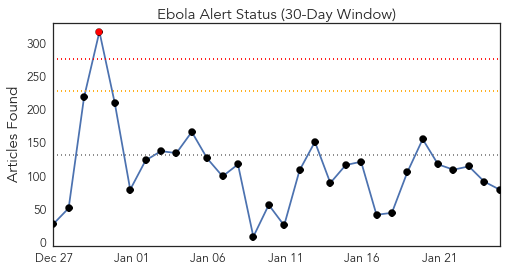
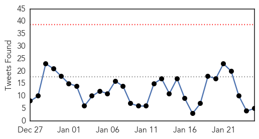
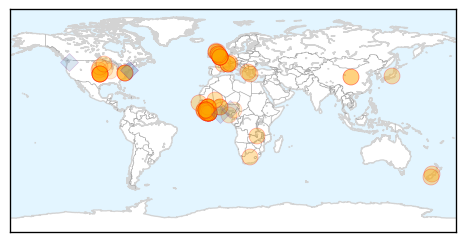
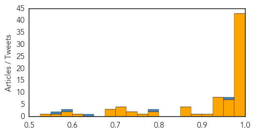

Ebola
30-Day Web Trend
1 alerts, 0 warnings

30-Day Twitter Trend
0 alerts, 0 warnings

Article Locations
Article Confidences
Top Articles:
- 1.000
- Tide turning in Ebola fight after hard lessons
- 1.000
- Is it possible to catch the Ebola virus more than once?
- 1.000
- As Ebola cases dwindle, officials try to learn lessons for future
- 1.000
- Tide turning in Ebola fight after hard lessons
- 1.000
- Tide turning in Ebola fight after hard lessons
- 1.000
- Five major U.S. airports to screen travelers from West Africa fo
- 1.000
- After hard lessons, tide turns in Ebola fight
- 1.000
- Ebola fight turns tide after hard lessons
- 1.000
- Ebola outlook improving in West Africa
- 1.000
- Ebola outlook improving in West Africa
- 1.000
- Ebola outlook improving in West Africa
- 1.000
- Ebola crisis: 'Too slow' WHO promises reforms
- 0.999
- Report by the Director-General to the Special Session of the Executive Board on Ebola
- 0.999
- Ebola: Origins of an African epidemic
- 0.999
- Queenstown man's warning on Ebola 'turning point'
- 0.999
- The Portland Press Herald / Maine Sunday Telegram
- 0.999
- MBITIRU: Signs are that West Africa may soon be declared Ebola-free - Opinion
- 0.998
- Otago Daily Times Online News : Otago, South Island, New Zealand & International News
- 0.998
- Ebola Almost Eradicated in Liberia, Vaccine Expected To Hit Next Week
- 0.997
- WHO vows reform after Ebola 'shocks'
- 0.996
- World Health Organization mulls reforms to repair reputation after bungling Ebola outbrteak
- 0.996
- WHO mulls reforms to repair reputation after bungling Ebola
- 0.995
- UN health agency to hold special weekend session on Ebola; warns against donor fatigue
- 0.994
- WHO calls for revamp after ′too slow′ Ebola response
- 0.994
- WHO mulls reforms to repair reputation after bungling Ebola
- 0.994
- WHO promises reforms
- 0.994
- WHO Mulls Reforms to Repair Reputation After Bungling Ebola
- 0.993
- the edge of knowledge
- 0.993
- Just five Ebola cases left in Liberia – UN
- 0.992
- Liberians Excited Over Arrival Of 300 Vials Of Ebola Vaccine To Help Reduce The High Rate Of Death From This Deadly Virus
- 0.992
- British Ebola nurse discharged from hospital
- 0.991
- Presbyterian Health Service Supports Ebola Isolation Unit
- 0.991
- Presby Health Service distributes equipment to health workers.
- 0.990
- Ebola – 16 more viruses in bats 'waiting to spread to humans'
- 0.989
- WHO mulls reforms to repair reputation after bungling Ebola
- 0.987
- WHO mulls reforms to repair reputation after bungling Ebola crisis
- 0.986
- Zambia's 10 million bats may hold clue to Ebola
- 0.985
- WHO pledges reforms as it admits Ebola mistakes
- 0.985
- Tide turning in Ebola fight
- 0.983
- UK nurse and Ebola virus patient makes full recovery
- 0.979
- WHO, under fire, to develop ‘surge capacity’ in post-Ebola crises
- 0.979
- Ebola Spurs WHO Plan for Health Reserves After Missteps
- 0.977
- Trials for Ebola vaccines
- 0.974
- WHO chief admits significant failings in Ebola response
- 0.973
- Ebola Slowed French Investment In Ivory Coast
- 0.971
- Sierra Leone Eases Business Restrictions As Ebola Subsides
- 0.963
- Spanish Ebola nurse whose dog Excalibur was put down amid riots adopts new pet 'Alma' – Spanish for 'Soul'
- 0.961
- WHO adopts reforms to repair reputation after bungling Ebola
- 0.959
- British nurse who contracted Ebola now free of virus
- 0.959
- Ebola Crisis Shows Changes Needed
Showing top 50 articles...
Top Tweets:
- 0.957
- A whole generation at risk from infectious disease? @AARP perhaps measles mumps more dangerous to 50+ than Ebola in USA
- 0.935
- Importance of artists in public health: Ebola Deeply wi Sierra Leone's Jimmy B & link 2 Ebola 4 Go: http://t.co/6OnabpRprJ Ebolatatatata
- 0.786
- RT: Ebola Takes a Toll on Sierra Leone’s Surgeons: http://t.co/3zdesme41M SierraLeone EbolaOutbreak AfricaAgainstEbola afr…
- 0.629
- RT: WHO Executive Special Session on Ebola has adjourned with the adoption of resolution on Ebola by Member States EB136
- 0.596
- RT: Support & @PaulGAllen help tackle Ebola. Wear ur pins tonite. It's working! TackleEbola RipCity http://t.…
Unknown
30-Day Web Trend
0 alerts, 0 warnings

30-Day Twitter Trend
2 alerts, 0 warnings

Article Locations

Article Confidences

Top Articles:
- 0.980
- Michigan flu outbreak claims first pediatric death
- 0.944
- El Paso flu cases tripled in 2014
- 0.917
- Chicago Tribune
- 0.917
- Chicago Tribune
- 0.917
- Chicago Tribune
- 0.910
- The world windows to Thailand
- 0.910
- The world windows to Thailand
- 0.909
- Utahns with Lyme disease frustrated by illness, lack of care
- 0.896
- CDC warns of apple-borne bacteria outbreak
- 0.895
- Medics needled amid flu fears
- 0.866
- EU summons foreign ministers to emergency meeting on Ukraine
- 0.866
- U.S.-China climate deal does not put pressure on India, says Modi
- 0.856
- DK, Udupi account for 50% of malaria cases
- 0.851
- Flu vaccination is still worthwhile
- 0.805
- Mandatory flu shots: Why one N.J. hospital had 4,400 employees vaccinated
- 0.758
- Antibiotic use by travelers may add to global spread of superbugs
- 0.755
- 'Mugabe obsessed with foreign health service'
- 0.738
- Maharashtra reports 13% of new leprosy cases in country
- 0.684
- Displaced residents of North Darfur camp warn of severe water shortages
- 0.666
- Fatal pig virus outbreak slows
- 0.636
- Second phase of National Polio campaign extended
- 0.630
- Bilharzia disease rampant in Zimbabwe
- 0.629
- Bird flu outbreak cause over 2,300 people under observation in Taiwan
- 0.564
- ‘Leprosy to plague Pakistan for next 20 years’
- 0.563
- HEALTH: High Drug Prices Hamper Drug-Resistant TB Treatment
- 0.548
- Burn unit at a loss
- 0.517
- Kabul Children's Hospital Faces Overcrowding
- 0.507
- Travelers taking antibiotics may be helping spread of 'superbugs'
Top Tweets:
- 0.752
- RT: Lo que pasó en Miami tiene un significado muy simbólico!Todos a promover la cultura de la bicicleta en todo el mundo. ht…